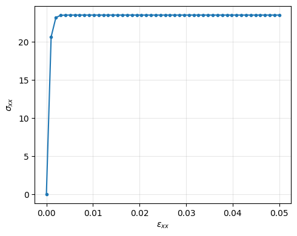

Transient driver¶
A TransientDriver walks a constitutive model through a prescribed
load history, feeding each step’s converged state into the next
step. In this tutorial you’ll ramp a strain from zero to 5% over 50
steps, run a perfect-viscoplastic model through that history, and
plot the resulting stress–strain curve. The driver is configured
from the same kind of input file you’ve been using.
The recursive update¶
Each step takes the previous state and the new forces and produces the next state:
for n in range(N):
s[n + 1] = model(f[n + 1], s[n], f[n])
When NEML2 is coupled to an external PDE solver, that loop lives outside
NEML2 — the host solver supplies the new forces and asks NEML2 for the
new state. For self-contained workflows (verification, regression tests,
parameter calibration, plotting a stress–strain curve),
TransientDriver keeps everything inside NEML2.
Note
For training and adjoint-style sensitivities through a transient,
prefer pyzag,
which performs the same recursive update in a much more efficient fashion.
The input file¶
The [Drivers] block names the model to step, the prescribed time
history, and the prescribed strain history. Time and the strain values
are built inline in [Tensors]:
# Drive a perfect-viscoplastic constitutive model through a uniaxial
# strain history of 50 steps. The implicit-update model `model` is the
# same kind of object that previous tutorials evaluated point-wise —
# `TransientDriver` repeatedly calls it, threading converged state from
# step n into step n+1.
[Tensors]
[times]
type = Python
expr = 'Scalar.linspace(0.0, 1.0, 50)'
[]
[max_strain]
type = Python
expr = 'SR2.fill(0.05, -0.025, -0.025, 0.0, 0.0, 0.0)'
[]
[strains]
type = Python
expr = 'SR2(torch.linspace(0.0, 1.0, 50, dtype=torch.float64).reshape(50, 1) * max_strain.data.unsqueeze(0))'
[]
[]
[Drivers]
[driver]
type = TransientDriver
model = 'model'
prescribed_time = 'times'
force_SR2_names = 'E'
force_SR2_values = 'strains'
[]
[]
[Models]
[mandel_stress]
type = IsotropicMandelStress
cauchy_stress = 'stress'
[]
[vonmises]
type = SR2Invariant
invariant_type = 'VONMISES'
tensor = 'mandel_stress'
invariant = 'effective_stress'
[]
[yield_surface]
type = YieldFunction
yield_stress = 5
[]
[flow]
type = ComposedModel
models = 'vonmises yield_surface'
[]
[normality]
type = Normality
model = 'flow'
function = 'yield_function'
from = 'mandel_stress'
to = 'flow_direction'
[]
[flow_rate]
type = PerzynaPlasticFlowRate
reference_stress = 100
exponent = 2
[]
[Eprate]
type = AssociativePlasticFlow
[]
[Erate]
type = SR2VariableRate
variable = 'E'
[]
[Eerate]
type = SR2LinearCombination
from = 'E_rate plastic_strain_rate'
to = 'strain_rate'
weights = '1 -1'
[]
[elasticity]
type = LinearIsotropicElasticity
coefficients = '1e5 0.3'
coefficient_types = 'YOUNGS_MODULUS POISSONS_RATIO'
rate_form = true
[]
[integrate_stress]
type = SR2BackwardEulerTimeIntegration
variable = 'stress'
[]
[implicit_rate]
type = ComposedModel
models = 'mandel_stress vonmises yield_surface normality flow_rate Eprate Erate Eerate elasticity integrate_stress'
[]
[]
[EquationSystems]
[eq_sys]
type = NonlinearSystem
model = 'implicit_rate'
unknowns = 'stress'
residuals = 'stress_residual'
[]
[]
[Solvers]
[newton]
type = Newton
linear_solver = 'lu'
[]
[lu]
type = DenseLU
[]
[]
[Models]
[predictor]
type = ConstantExtrapolationPredictor
unknowns_SR2 = 'stress'
[]
[model]
type = ImplicitUpdate
equation_system = 'eq_sys'
solver = 'newton'
predictor = 'predictor'
[]
[]
A few things worth pointing out:
prescribed_timehas shape(N,)— one time value per step.Nsets the number of steps.The
force_*_names/force_*_valuespair wires a model input (here the strainE) to a tensor block that supplies its values at every step. Each force tensor must carry a leading axis of lengthN.Anything not listed as a prescribed force or initial condition starts at zero — so stress starts at zero at step 0.
The [Tensors] block builds a 50-step time vector \(t \in [0, 1]\) and a
matching strain history that ramps linearly to a peak uniaxial strain
of \(\varepsilon_{xx} = 5\%\) with lateral contractions consistent with
isochoric deformation. See Cross-referencing for
more examples of the type = Python block.
Building and running the driver¶
load_input(path).get_driver(name) builds the driver from the input
file:
import neml2
factory = neml2.load_input("input.i")
driver = factory.get_driver("driver")
driver
<neml2.drivers.TransientDriver.TransientDriver at 0x7f7213cb5f30>
The driver carries the parsed model, the prescribed-time tensor, and
the prescribed forces. The number of steps comes from the leading axis
of prescribed_time:
print("nsteps =", driver.nsteps)
print("forces =", list(driver.forces))
print("wrapped model =", type(driver.model).__name__)
nsteps = 50
forces = ['E']
wrapped model = ImplicitUpdate
driver.run() executes the time loop, threading each step’s converged
state into the next step:
driver.run()
True
Reading the per-step output¶
driver.result() returns a flat dict keyed by
input.<step>.<variable> and output.<step>.<variable>. Step 0 holds
only the prescribed forces (the model isn’t called at step 0); every
later step holds what the model returned:
results = driver.result()
print("total entries:", len(results))
print("step 0 keys:", [k for k in results if k.startswith("input.0.")])
print("step 1 inputs:", [k for k in results if k.startswith("input.1.")])
print("step 1 outputs:", [k for k in results if k.startswith("output.1.")])
total entries: 295
step 0 keys: ['input.0.t', 'input.0.E']
step 1 inputs: ['input.1.t', 'input.1.E', 'input.1.E~1', 'input.1.t~1']
step 1 outputs: ['output.1.stress']
(Aside on the ~k syntax: a variable name ending in ~k denotes
its value from k steps back — E~1 is the previous step’s strain,
t~1 the previous step’s time. The model sees both E and E~1
and computes a strain rate internally.)
Pulling per-step strain and stress out as 1-D tensors is a simple comprehension:
import torch
nsteps = driver.nsteps
times = torch.tensor([results[f"input.{i}.t"].item() for i in range(nsteps)])
strain_xx = torch.tensor(
[results[f"input.{i}.E"][0].item() for i in range(nsteps)]
)
# Step 0 has no output -> stress is the zero initial condition.
stress_xx = torch.tensor(
[0.0] + [results[f"output.{i}.stress"][0].item() for i in range(1, nsteps)]
)
print(f"max strain_xx = {strain_xx.max().item():.4f}")
print(f"max stress_xx = {stress_xx.max().item():.2f}")
max strain_xx = 0.0500
max stress_xx = 23.54
(Index [0] picks the first Mandel slot of the SR2 payload, which is
the \(xx\) component.)
Plotting the stress–strain curve¶
With per-step strain_xx and stress_xx in hand, the curve is just a
matplotlib call. matplotlib is available in the [dev] extras
(pip install -e ".[dev]"):
import matplotlib.pyplot as plt
fig, ax = plt.subplots(figsize=(5, 4))
ax.plot(strain_xx, stress_xx, "C0o-", markersize=3)
ax.set_xlabel(r"$\varepsilon_{xx}$")
ax.set_ylabel(r"$\sigma_{xx}$")
ax.grid(True, alpha=0.3)
fig.tight_layout()

The initial linear segment is purely elastic. Once the von Mises stress exceeds the yield surface the Perzyna flow rule activates and the stress plateaus at the rate-dependent overstress level — a textbook perfect-viscoplastic response.
Saving the trajectory to disk¶
The full result dict can be saved to a single .pt file, keyed by the
same strings driver.result() returns in
memory:
driver.save_gold("result.pt")
loaded = torch.load("result.pt", weights_only=True)
print("entry count:", len(loaded))
print("a few keys :", list(loaded)[:4])
entry count: 295
a few keys : ['input.0.t', 'input.0.E', 'input.1.t', 'input.1.E']
This is the same format the regression suite’s
TransientRegression consumes for
its gold/result.pt references.
Where to go next¶
To prescribe stress instead of strain, swap which variable the
force_*block supplies; the rest of the workflow is unchanged.Give
prescribed_timeand the force tensors a trailing batch axis and the driver will sweep that axis in parallel — useful for parameter or initial-condition sweeps. See Vectorization for the batching rules.For gradient-based training through a transient response, see
pyzag.